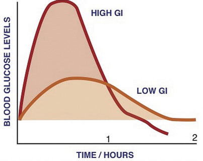
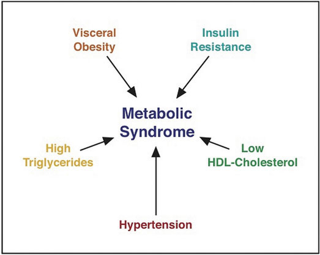
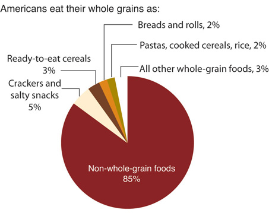

Whole grains are an energy source with nutritional punch.
The History of Bread
(click to see video)Watch the History of Bread, part one, from The History Channel. To further satiate your interest go on to watch the other five parts, available on YouTube.
You likely eat grains every day—cereal, a sandwich, pasta, or your favorite rice dish. Whole grains are vital to a healthful diet. In addition to fiber, whole grains offer other slow-releasing carbohydrates, antioxidants, vitamins, and minerals, all of which are needed for good health. Maybe you are on a diet and have been told to limit or restrict your carbohydrate intake. How much is too much and which carbohydrates are better for you? Can you promote a healthy weight with a balanced intake of whole grains? Before we answer these questions, let’s examine in brief the history of grain.
In ancient times whole grains were cracked open using quern stones that required hours of hand labor. As technology slowly advanced, the quern stone was modified into the millstone. It wasn’t until the advent of water wheels that human labor to produce grains was reduced. About 2,500 years ago the Romans started milling flour by turning one millstone wheel against another that did not move. The turning was done by animals, slaves, and later by waterwheels. The process of milling breaks the hard outer bran coat of the wheat seeds. The bran and germ, which contain the majority of fiber, vitamins, and minerals, are removed by sifting. In the earliest days, the whitest flour was chosen to make bread for the wealthy, and the coarsest was given to the poor. One’s economic status was depicted by the color of bread they ate. Wheat was the grain of choice for many cultures, as it not only produced white flour but also contained gluten which gives wheat bread its elasticity and lightness in texture. The word “flour” comes from a French word meaning “blossom” and is metaphoric for the finest part of the meal. Bakers highly prized their art and it was kept from the masses. In fact the baker’s mark was one of the first trademarks.
In America, Oliver Evans built the first flour mill, which was powered by a watermill. It used a series of elevators that moved grain through the mill, cleaning it first, then grinding and sifting it. Today, modern milling produces three types of flour; whole meal containing 100 percent of the grain, with nothing added or removed; brown flour, containing 85 percent of the original grain with some bran and germ and white flour, containing 75 percent of the wheat grain with the most bran and germ removed. The vast majority of flour milled and used in foods and cooking in America is white flour. The modern milling process of preparing white flour removes between 50 and 85 percent of B vitamins, vitamin E, calcium, iron, potassium, chromium, phosphorus, zinc, magnesium manganese, and cobalt.
Wheat kernel anatomy and composition.
In the early nineteenth century several diseases stemming from vitamin and mineral deficiencies, such as pellagra (niacin, B3), beriberi (thiamine, B1), and anemia (iron), plagued many inhabitants of the nation. One of the first public health campaigns was to improve the health of Americans by enriching flour, a dietary staple. The B vitamins, niacin, thiamine, riboflavin, and folate were added along with iron to combat dietary deficiencies and proved a successful strategy to improve public health. However, enriched flour contains only 6 percent or less of the recommended daily intake of the vitamins and minerals it “replaces.” Overwhelming scientific evidence now shows that diets containing high amounts of whole grains rather than refined white flour decrease weight gain and the risk for many chronic diseases, including certain types of cancer and diabetes. Whole grains contain a whole nutrient package that is not replaced by enriched flour. Consumers are becoming more aware of the many health benefits of whole grains. However, the food industry has created a puzzle for consumers in determining if a product is made from 100 percent whole grains. “Whole wheat” does not always mean the product is made with 100 percent whole grains, and brown breads are not always healthier than white as the color may come from added caramel. The Food and Drug Administration (FDA) has provided the food industry with specifics on how to label whole-grain foods—to label it as made from 100 percent whole grains. The best method to ensure the product is made from 100 percent whole grains is to check the ingredient list. One-hundred percent whole-grain products list whole grains or whole-wheat flour most often as the first ingredient and do not contain wheat flour, white flour, yellow corn flour, semolina flour, degerminated flour, or durum flour. In America, whole-grain choices are improving, but progress still needs to be made on reducing the added sugar content of many industrially prepared breads, assuring added fiber comes from good sources, eliminating ambiguous labels and claims on packaging, and reducing the costs of whole-grain breads, which still exceed that of white bread.
What 100 percent whole-grain products can you include in your diet to improve health, prevent disease, and be tastefully satisfied?
As you read on, you will learn the different types of carbohydrates, their essential roles in the body, the potential health consequences and benefits of diets rich in particular carbohydrates, and the many foods available that are rich in carbohydrates as well as nutritious and satisfying. After reading this chapter, you will be better equipped to decide the best way to get your nutritional punch from various carbohydrates in your diet.
“If thou tastest a crust of bread, thou tastest all the stars and all the heavens.”
Robert Browning, English poet and playwright (May 1812–December 1889)
Carbohydrates are the perfect nutrient to meet your body’s nutritional needs. They nourish your brain and nervous system, provide energy to all of your cells (and within proper caloric limits), and help keep your body fit and lean. Specifically, digestible carbohydrates provide bulk in foods, vitamins, and minerals, while indigestible carbohydrates provide a good amount of fiber with a host of other health benefits.
Plants synthesize the fast-releasing carbohydrate, glucose, from carbon dioxide in the air and water, and by harnessing the sun’s energy. Recall from Chapter 3 "Nutrition and the Human Body" that plants convert the energy in sunlight to chemical energy in the molecule, glucose. Plants use glucose to make other larger, more slow-releasing carbohydrates. When we eat plants we harvest the energy of glucose to support life’s processes.
Figure 4.1 Carbohydrate Classification Scheme
Carbohydrates are broken down into the subgroups “fast-releasing” and “slow-releasing” carbohydrates. These subgroups are further categorized into mono-, di-, and polysaccharides.
Carbohydrates are a group of organic compounds containing a ratio of one carbon atom to two hydrogen atoms to one oxygen atom. Basically, they are hydrated carbons. The word “carbo” means carbon and “hydrate” means water. GlucoseThe most abundant carbohydrate in the human body. It has six carbon atoms, twelve hydrogen atoms, and six oxygen atoms., the most abundant carbohydrate in the human body, has six carbon atoms, twelve hydrogen atoms, and six oxygen atoms. The chemical formula for glucose is written as C6H12O6. Synonymous with the term carbohydrate is the Greek word “saccharide,” which means sugar. The simplest unit of a carbohydrate is a monosaccharideThe simplest unit of a carbohydrate.. Carbohydrates are broadly classified into two subgroups, “fast-releasing” and “slow-releasing.” Fast-releasing carbohydrates are further grouped into the monosaccharides and dissacharides. Slow-releasing carbohydrates are long chains of monosaccharides. (Figure 4.1 "Carbohydrate Classification Scheme").
Fast-releasing carbohydrates are also known more simply as “sugars.” Fast-releasing carbohydrates are grouped as either monosaccharides or dissacharides. Monosaccharides include glucose, fructose, and galactose, and the dissacharides include, lactose, maltose, and sucrose.
For all organisms from bacteria to plants to animals, glucose is the preferred fuel source. The brain is completely dependent on glucose as its energy source (except during extreme starvation conditions). The monosaccharide galactose differs from glucose only in that a hydroxyl (−OH) group faces in a different direction on the number four carbon (Figure 4.2 "Structures of the Three Most Common Monosaccharides: Glucose, Galactose, and Fructose"). This small structural alteration causes galactose to be less stable than glucose. As a result, the liver rapidly converts it to glucose. Most absorbed galactose is utilized for energy production in cells after its conversion to glucose. (Galactose is one of two simple sugars that are bound together to make up the sugar found in milk. It is later freed during the digestion process.)
Fructose also has the same chemical formula as glucose but differs in its chemical structure, as the ring structure contains only five carbons and not six (Figure 4.2 "Structures of the Three Most Common Monosaccharides: Glucose, Galactose, and Fructose"). Fructose, in contrast to glucose, is not an energy source for other cells in the body. Mostly found in fruits, honey, and sugarcane, fructose is one of the most common monosaccharides in nature. It is also found in soft drinks, cereals, and other products sweetened with high fructose corn syrup.
Figure 4.2 Structures of the Three Most Common Monosaccharides: Glucose, Galactose, and Fructose

Red circles indicate the structural differences between the three.
Less common monosaccharides are the pentoses, which have only five carbons and not six. The pentoses are abundant in the nucleic acids RNA and DNA, and also as components of fiber.
Lastly, there are the sugar alcohols, which are industrially synthesized derivatives of monosaccharides. Some examples of sugar alcohols are sorbitol, xylitol, and glycerol. (Xylitol is similar in sweetness as table sugar.) Sugar alcohols are often used in place of table sugar to sweeten foods as they are incompletely digested and absorbed, and therefore less caloric. The bacteria in your mouth opposes them, hence sugar alcohols do not cause tooth decay. Interestingly, the sensation of “coolness” that occurs when chewing gum that contains sugar alcohols comes from them dissolving in the mouth, a chemical reaction that requires heat from the inside of the mouth.
DisaccharidesTwo monosaccharides joined together. are composed of pairs of two monosaccharides linked together. Disaccharides include sucrose, lactose, and maltose. All of the disaccharides contain at least one glucose molecule.
Sucrose, which contains both glucose and fructose molecules, is otherwise known as table sugar. Sucrose is also found in many fruits and vegetables, and at high concentrations in sugar beets and sugar cane, which are used to make table sugar. Lactose, which is commonly known as milk sugar, is composed of one glucose unit and one galactose unit. Lactose is prevalent in dairy products such as milk, yogurt, and cheese. Maltose consists of two glucose molecules bonded together. It is a common breakdown product of plant starches and is rarely found in foods as a disaccharide.
Slow-releasing carbohydrates are polysaccharidesA long chain of monosaccharides that may be branched or not branched., long chains of monosaccharides that may be branched or not branched. There are two main groups of polysaccharides: starches and fibers.
Starch molecules are found in abundance in grains, legumes, and root vegetables, such as potatoes. Amylose, a plant starch, is a linear chain containing hundreds of glucose units. Amylopectin, another plant starch, is a branched chain containing thousands of glucose units. These large starch molecules form crystals and are the energy-storing molecules of plants. These two starch molecules (amylose and amylopectine) are contained together in foods, but the smaller one, amylose, is more abundant. Eating raw foods containing starches provides very little energy as the digestive system has a hard time breaking them down. Cooking breaks down the crystal structure of starches, making them much easier to break down in the human body. The starches that remain intact throughout digestion are called resistant starches. Bacteria in the gut can break some of these down and may benefit gastrointestinal health. Isolated and modified starches are used widely in the food industry and during cooking as food thickeners.
Figure 4.3 Structures of the Plant Starches and Glycogen

Humans and animals store glucose energy from starches in the form of the very large molecule, glycogenA highly branched macromolecule consisting of thousands of glucose monomers held together by chemical bonds.. It has many branches that allow it to break down quickly when energy is needed by cells in the body. It is predominantly found in liver and muscle tissue in animals.
Dietary fibersPolysaccharides that are highly branched and cross-linked and only found in plant-based foods, with the exception of chitin (which forms the exoskeletons of some animals). are polysaccharides that are highly branched and cross-linked. Some dietary fibers are pectin, gums, cellulose, and lignin. Humans do not produce the enzymes that can break down dietary fiber; however, bacteria in the large intestine (colon) do. Dietary fibers are very beneficial to our health. The Dietary Guidelines Advisory Committee states that there is enough scientific evidence to support that diets high in fiber reduce the risk for obesity and diabetes, which are primary risk factors for cardiovascular disease.US Department of Agriculture. “Part D. Section 5: Carbohydrates.” In Report of the DGAC on the Dietary Guidelines for Americans, 2010. Accessed September 30, 2011. http://www.cnpp.usda.gov/Publications/DietaryGuidelines/2010/DGAC/Report/D-5-Carbohydrates.pdf. Dietary fiber is categorized as either water-soluble or insoluble. Some examples of soluble fibers are inulin, pectin, and guar gum and they are found in peas, beans, oats, barley, and rye. Cellulose and lignin are insoluble fibers and a few dietary sources of them are whole-grain foods, flax, cauliflower, and avocados. Cellulose is the most abundant fiber in plants, making up the cell walls and providing structure. Soluble fibers are more easily accessible to bacterial enzymes in the large intestine so they can be broken down to a greater extent than insoluble fibers, but even some breakdown of cellulose and other insoluble fibers occurs.
The last class of fiber is functional fiber. Functional fibers have been added to foods and have been shown to provide health benefits to humans. Functional fibers may be extracted from plants and purified or synthetically made. An example of a functional fiber is psyllium-seed husk. Scientific studies show that consuming psyllium-seed husk reduces blood-cholesterol levels and this health claim has been approved by the FDA. Total dietary fiber intake is the sum of dietary fiber and functional fiber consumed.
Bring in the packages for the breads you eat and compare the different ingredients lists with your classmates. Are they labeled well? Do they contain any health claims? Are they made from 100 percent whole grain? Do they contain added sugars? For more help on defining products made with whole grains, visit the website of the Whole Grains Council.
http://www.wholegrainscouncil.org/whole-grains-101/definition-of-whole-grains
Sweetness is one of the five basic taste sensations of foods and beverages and is sensed by protein receptors in cells of the taste buds. Fast-releasing carbohydrates stimulate the sweetness taste sensation, which is the most sensitive of all taste sensations. Even extremely low concentrations of sugars in foods will stimulate the sweetness taste sensation. Sweetness varies between the different carbohydrate types—some are much sweeter than others. Fructose is the top naturally occurring sugar in sweetness value. See Table 4.1 "Sweetness Comparison of Carbohydrates" for sweetness comparisons among different naturally-occurring carbohydrates. Sweetness is a pleasurable sensation and some people enjoy the taste more than others. In a colloquial sense we identify such people as having a “sweet tooth.” This does not mean that the less-sweet whole grains containing more starches and fiber are less satisfying. Whole grains take longer to chew and get sweeter the more you chew them. Additionally, once in the stomach, whole-grain foods take longer to digest, and keep you full longer. Remember too that they contain fiber which makes elimination much smoother. Whole-grain foods satisfy the body the entire way through the digestive tract and provide the nutrients that also better satisfy the body’s functional needs.
Table 4.1 Sweetness Comparison of Carbohydrates
| Carbohydrate | Sweetness (percentage of sucrose) |
|---|---|
| Sucrose | 100 |
| Glucose | 74 |
| Galactose | 33 |
| Fructose | 173 |
| Maltose | 33 |
| Lactose | 16 |
| Starch | 0 |
| Fiber | 0 |
Source: Carter, J. Stein. “Carbohydrates.” © 1996 by J. Stein Carter. All rights reserved. http://www.biology.clc.uc.edu/courses/bio104/carbohydrates.htm.
The mechanical and chemical digestion of carbohydrates begins in the mouth. Chewing, also known as mastication, crumbles the carbohydrate foods into smaller and smaller pieces. The salivary glands in the oral cavity secrete saliva that coats the food particles. Saliva contains the enzyme, salivary amylaseEnzyme secreted by the salivary glands in the mouth that breaks down carbohydrates by breaking the glycosidic bonds between monomers.. This enzyme breaks the bonds between the monomeric sugar units of disaccharides, oligosaccharidesA carbohydrate that is a chain of a few (between three and ten) monosaccharides., and starches. The salivary amylase breaks down amylose and amylopectin into smaller chains of glucose, called dextrins and maltose. The increased concentration of maltose in the mouth that results from the mechanical and chemical breakdown of starches in whole grains is what enhances their sweetness. Only about five percent of starches are broken down in the mouth. (This is a good thing as more glucose in the mouth would lead to more tooth decay.) When carbohydrates reach the stomach no further chemical breakdown occurs because the amylase enzyme does not function in the acidic conditions of the stomach. But mechanical breakdown is ongoing—the strong peristaltic contractions of the stomach mix the carbohydrates into the more uniform mixture of chyme.
Salivary glands secrete salivary amylase, which begins the chemical breakdown of carbohydrates by breaking the bonds between monomeric sugar units.
The chyme is gradually expelled into the upper part of the small intestine. Upon entry of the chyme into the small intestine, the pancreas releases pancreatic juice through a duct. This pancreatic juice contains the enzyme, pancreatic amylaseEnzyme secreted by the pancreas that breaks down carbohydrates in the small intestine by breaking the glycosidic bonds between monomers., which starts again the breakdown of dextrins into shorter and shorter carbohydrate chains. Additionally, enzymes are secreted by the intestinal cells that line the villi. These enzymes, known collectively as disaccharides, are sucrase, maltase, and lactase. Sucrase breaks sucrose into glucose and fructose molecules. Maltase breaks the bond between the two glucose units of maltose, and lactase breaks the bond between galactose and glucose. Once carbohydrates are chemically broken down into single sugar units they are then transported into the inside of intestinal cells.
When people do not have enough of the enzyme lactase, lactose is not sufficiently broken down resulting in a condition called lactose intoleranceA condition in which there is incomplete digestion of lactose. It is caused by a deficiency in the enzyme, lactase. Symptoms include diarrhea, bloating, and abdominal cramps.. The undigested lactose moves to the large intestine where bacteria are able to digest it. The bacterial digestion of lactose produces gases leading to symptoms of diarrhea, bloating, and abdominal cramps. Lactose intolerance usually occurs in adults and is associated with race. The National Digestive Diseases Information Clearing House states that African Americans, Hispanic Americans, American Indians, and Asian Americans have much higher incidences of lactose intolerance while those of northern European descent have the least.National Digestive Diseases Information Clearing House. “Lactose Intolerance.” Last updated April 23, 2012. http://digestive.niddk.nih.gov/ddiseases/pubs/lactoseintolerance/. Most people with lactose intolerance can tolerate some amount of dairy products in their diet. The severity of the symptoms depends on how much lactose is consumed and the degree of lactase deficiency.
The cells in the small intestine have membranes that contain many transport proteins in order to get the monosaccharides and other nutrients into the blood where they can be distributed to the rest of the body. The first organ to receive glucose, fructose, and galactose is the liver. The liver takes them up and converts galactose to glucose, breaks fructose into even smaller carbon-containing units, and either stores glucose as glycogen or exports it back to the blood. How much glucose the liver exports to the blood is under hormonal control and you will soon discover that even the glucose itself regulates its concentrations in the blood.
Carbohydrate digestion begins in the mouth and is most extensive in the small intestine. The resultant monosaccharides are absorbed into the bloodstream and transported to the liver.
Glucose levels in the blood are tightly controlled, as having either too much or too little glucose in the blood can have health consequences. Glucose regulates its levels in the blood via a process called negative feedback. An everyday example of negative feedback is in your oven because it contains a thermostat. When you set the temperature to cook a delicious homemade noodle casserole at 375°F the thermostat senses the temperature and sends an electrical signal to turn the elements on and heat up the oven. When the temperature reaches 375°F the thermostat senses the temperature and sends a signal to turn the element off. Similarly, your body senses blood glucose levels and maintains the glucose “temperature” in the target range. The glucose thermostat is located within the cells of the pancreas. After eating a meal containing carbohydrates glucose levels rise in the blood.
Insulin-secreting cells in the pancreas sense the increase in blood glucose and release the hormonal message, insulin, into the blood. Insulin sends a signal to the body’s cells to remove glucose from the blood by transporting to the insides of cells and to use it to make energy or for building macromolecules. In the case of muscle tissue and the liver, insulin sends the biological message to store glucose away as glycogen. The presence of insulin in the blood signifies to the body that it has just been fed and to use the fuel. Insulin has an opposing hormone called glucagon. As the time after a meal increases, glucose levels decrease in the blood. Glucagon-secreting cells in the pancreas sense the drop in glucose and, in response, release glucagon into the blood. Glucagon communicates to the cells in the body to stop using all the glucose. More specifically, it signals the liver to break down glycogen and release the stored glucose into the blood, so that glucose levels stay within the target range and all cells get the needed fuel to function properly.
Almost all of the carbohydrates, except for dietary fiber and resistant starches, are efficiently digested and absorbed into the body. Some of the remaining indigestible carbohydrates are broken down by enzymes released by bacteria in the large intestine. The products of bacterial digestion of these slow-releasing carbohydrates are short-chain fatty acids and some gases. The short-chain fatty acids are either used by the bacteria to make energy and grow, are eliminated in the feces, or are absorbed into cells of the colon, with a small amount being transported to the liver. Colonic cells use the short-chain fatty acids to support some of their functions. The liver can also metabolize the short-chain fatty acids into cellular energy. The yield of energy from dietary fiber is about 2 kilocalories per gram for humans, but is highly dependent upon the fiber type, with soluble fibers and resistant starches yielding more energy than insoluble fibers. Since dietary fiber is digested much less in the gastrointestinal tract than other carbohydrate types (simple sugars, many starches) the rise in blood glucose after eating them is less, and slower. These physiological attributes of high-fiber foods (i.e. whole grains) are linked to a decrease in weight gain and reduced risk of chronic diseases, such as Type 2 diabetes and cardiovascular disease.
It’s Thanksgiving and you have just consumed turkey with mashed potatoes, stuffing smothered in gravy, green beans topped with crispy fried onions, a hot roll dripping with butter, and cranberry sauce. Less than an hour later you top it all off with a slice of pumpkin pie and then lie down on the couch to watch the football game. What happens in your body after digesting and absorbing the whopping amount of nutrients in this Thanksgiving feast? The “hormone of plenty,” insulin, answers the nutrient call. Insulin sends out the physiological message that glucose and everything else is in abundant supply in the blood, so cells absorb and then use or store it. The result of this hormone message is maximization of glycogen stores and all the excess glucose, protein, and lipids are stored as fat.
Figure 4.4
The glycemic index measures the effects of foods on blood-glucose levels.
A typical American Thanksgiving meal contains many foods that are dense in carbohydrates, with the majority of those being simple sugars and starches. These types of carbohydrate foods are rapidly digested and absorbed. Blood glucose levels rise quickly causing a spike in insulin levels. Contrastingly, foods containing high amounts of fiber are like time-release capsules of sugar. A measurement of the effects of a carbohydrate-containing food on blood-glucose levels is called the glycemic response (Figure 4.4).
The glycemic responses of various foods have been measured and then ranked in comparison to a reference food, usually a slice of white bread or just straight glucose, to create a numeric value called the glycemic index (GI)A measurement of the effects of carbohydrate-containing foods on blood-glucose levels.. Foods that have a low GI do not raise blood-glucose levels neither as much nor as fast as foods that have a higher GI. A diet of low-GI foods has been shown in epidemiological and clinical trial studies to increase weight loss and reduce the risk of obesity, Type 2 diabetes, and cardiovascular disease.Brand-Miller, J., PhD, et al. “Dietary Glycemic Index: Health Implications.” J Am Coll Nutr 28, no. 4, supplement (2009): 446S–49S. http://www.jacn.org/content/28/4_Supplement_1/446S.long.
Table 4.2 The Glycemic Index: Foods in Comparison to Glucose
| Foods | GI Value |
|---|---|
| Low GI Foods (< 55) | |
| Apple | 44 |
| Pear | 38 |
| Banana (under-ripe) | 51 |
| Grapefruit | 25 |
| Barley | 25 |
| Navy beans | 38 |
| Green peas | 48 |
| Oat bran (Quaker Oats) | 50 |
| Spaghetti (whole wheat) | 37 |
| Mashed sweet potatoes | 54 |
| Baked beans | 48 |
| Butter beans | 44 |
| Banana bread | 47 |
| Bread (sourdough) | 52 |
| Soy milk | 31 |
| Skim milk | 32 |
| Whole milk | 27 |
| Yogurt (sweetened) | 33 |
| Yogurt (plain, artificial sweetener) | 14 |
| Medium GI Foods (56–69) | |
| Apricots | 57 |
| Cantaloupe | 65 |
| Mashed potatoes | 70 |
| Whole-wheat pita bread | 57 |
| Whole-wheat bread | 69 |
| Couscous | 65 |
| Brown rice | 55 |
| Cheese pizza | 60 |
| Rye bread | 65 |
| Hamburger bun | 61 |
| Black bean soup | 64 |
| Macaroni and cheese | 64 |
| Coca-Cola | 63 |
| High GI Foods (70 and higher) | |
| Dates | 103 |
| Banana (over-ripe) | 82 |
| Parsnips | 97 |
| Corn chips | 72 |
| Pretzels | 83 |
| White bread | 70 |
| White rice | 72 |
| Spaghetti (durum flour) | 78 |
| White rice (instant) | 87 |
| French baguette | 95 |
| Bagel | 72 |
| Bread stuffing | 74 |
| Cheerios | 74 |
| Cream of wheat | 71 |
| Raisin Bran | 73 |
| Fruit roll-up | 99 |
| Gatorade | 78 |
Source: University of Sydney. Glycemic Index Database. © 2011 The University of Sydney, all rights reserved. http://www.glycemicindex.com/.
The carbohydrate type within a food affects the GI, but so does its fat and fiber content (which reduce the GI). Increased fat and fiber in foods increases the time required for digestion and delays the rate of gastric emptying into the small intestine. Processing and cooking additionally affect a food’s GI by increasing their digestibility. Advancements in the technologies of food processing and the high consumer demand for convenient, precooked foods in the United States have created foods that are digested and absorbed more rapidly, independent of the fiber content. Modern breakfast cereals, breads, pastas, and many prepared foods have a high GI. In contrast, most raw foods have a lower GI. (However, the more ripened a fruit or vegetable is, the higher its GI.) Table 4.2 "The Glycemic Index: Foods in Comparison to Glucose" provides the GI for various foods. The GI can be used as a guide for choosing healthier carbohydrate choices but has some limitations. One is that the GI does not take into account the amount of carbohydrates in a portion of food, only the type of carbohydrate. Another is that combining low- and high-GI foods changes the GI for the meal. Also, some nutrient-dense foods have higher GIs than less nutritious food. (For instance, oatmeal has a higher GI than chocolate because the fat content of chocolate is higher.) Lastly, meats and fats do not have a GI since they do not contain carbohydrates.
To balance the high-GI foods on the Thanksgiving table with low-GI foods, follow some of these suggestions:
There are five primary functions of carbohydrates in the human body. They are energy production, energy storage, building macromolecules, sparing protein, and assisting in lipid metabolism.
The primary role of carbohydrates is to supply energy to all cells in the body. Many cells prefer glucose as a source of energy versus other compounds like fatty acids. Some cells, such as red blood cells, are only able to produce cellular energy from glucose. The brain is also highly sensitive to low blood-glucose levels because it uses only glucose to produce energy and function (unless under extreme starvation conditions). About 70 percent of the glucose entering the body from digestion is redistributed (by the liver) back into the blood for use by other tissues. Cells that require energy remove the glucose from the blood with a transport protein in their membranes. The energy from glucose comes from the chemical bonds between the carbon atoms. Sunlight energy was required to produce these high-energy bonds in the process of photosynthesis. Cells in our bodies break these bonds and capture the energy to perform cellular respiration. Cellular respiration is basically a controlled burning of glucose versus an uncontrolled burning. A cell uses many chemical reactions in multiple enzymatic steps to slow the release of energy (no explosion) and more efficiently capture the energy held within the chemical bonds in glucose.
The first stage in the breakdown of glucose is called glycolysis. GlycolysisThe first stage of glucose breakdown; a ten-step enzymatic process that splits glucose into two three-carbon molecules and yields two molecules of ATP., or the splitting of glucose, occurs in an intricate series of ten enzymatic-reaction steps. The second stage of glucose breakdown occurs in the energy factory organelles, called mitochondria. One carbon atom and two oxygen atoms are removed, yielding more energy. The energy from these carbon bonds is carried to another area of the mitochondria, making the cellular energy available in a form cells can use.
Cellular respiration is the process by which energy is captured from glucose.
Figure 4.5
The structure of glycogen enables its rapid mobilization into free glucose to power cells.
If the body already has enough energy to support its functions, the excess glucose is stored as glycogen (the majority of which is stored in the muscle and liver). A molecule of glycogen may contain in excess of fifty thousand single glucose units and is highly branched, allowing for the rapid dissemination of glucose when it is needed to make cellular energy (Figure 4.5).
The amount of glycogen in the body at any one time is equivalent to about 4,000 kilocalories—3,000 in muscle tissue and 1,000 in the liver. Prolonged muscle use (such as exercise for longer than a few hours) can deplete the glycogen energy reserve. Remember also from Chapter 3 "Nutrition and the Human Body" that this is referred to as “hitting the wall” or “bonking” and is characterized by fatigue and a decrease in exercise performance. The weakening of muscles sets in because it takes longer to transform the chemical energy in fatty acids and proteins to usable energy than glucose. After prolonged exercise, glycogen is gone and muscles must rely more on lipids and proteins as an energy source. Athletes can increase their glycogen reserve modestly by reducing training intensity and increasing their carbohydrate intake to between 60 and 70 percent of total calories three to five days prior to an event. People who are not hardcore training and choose to run a 5-kilometer race for fun do not need to consume a big plate of pasta prior to a race since without long-term intense training the adaptation of increased muscle glycogen will not happen.
The liver, like muscle, can store glucose energy as a glycogen, but in contrast to muscle tissue it will sacrifice its stored glucose energy to other tissues in the body when blood glucose is low. Approximately one-quarter of total body glycogen content is in the liver (which is equivalent to about a four-hour supply of glucose) but this is highly dependent on activity level. The liver uses this glycogen reserve as a way to keep blood-glucose levels within a narrow range between meal times. When the liver’s glycogen supply is exhausted, glucose is made from amino acids obtained from the destruction of proteins in order to maintain metabolic homeostasis.
Although most absorbed glucose is used to make energy, some glucose is converted to ribose and deoxyribose, which are essential building blocks of important macromolecules, such as RNA, DNA, and ATP (Figure 4.6). Glucose is additionally utilized to make the molecule NADPH, which is important for protection against oxidative stress and is used in many other chemical reactions in the body. If all of the energy, glycogen-storing capacity, and building needs of the body are met, excess glucose can be used to make fat. This is why a diet too high in carbohydrates and calories can add on the fat pounds—a topic that will be discussed shortly.
In a situation where there is not enough glucose to meet the body’s needs, glucose is synthesized from amino acids. Because there is no storage molecule of amino acids, this process requires the destruction of proteins, primarily from muscle tissue. The presence of adequate glucose basically spares the breakdown of proteins from being used to make glucose needed by the body.
As blood-glucose levels rise, the use of lipids as an energy source is inhibited. Thus, glucose additionally has a “fat-sparing” effect. This is because an increase in blood glucose stimulates release of the hormone insulin, which tells cells to use glucose (instead of lipids) to make energy. Adequate glucose levels in the blood also prevent the development of ketosis. Ketosis is a metabolic condition resulting from an elevation of ketone bodies in the blood. Ketone bodies are an alternative energy source that cells can use when glucose supply is insufficient, such as during fasting. Ketone bodies are acidic and high elevations in the blood can cause it to become too acidic. This is rare in healthy adults, but can occur in alcoholics, people who are malnourished, and in individuals who have Type 1 diabetes. The minimum amount of carbohydrate in the diet required to inhibit ketosis in adults is 50 grams per day.
Carbohydrates are critical to support life’s most basic function—the production of energy. Without energy none of the other life processes are performed. Although our bodies can synthesize glucose it comes at the cost of protein destruction. As with all nutrients though, carbohydrates are to be consumed in moderation as having too much or too little in the diet may lead to health problems.
Diabetes is one of the top three diseases in America. It affects millions of people and causes tens of thousands of deaths each year. Diabetes is a metabolic disease of insulin deficiency and glucose over-sufficiency. Like other diseases, genetics, nutrition, environment, and lifestyle are all involved in determining a person’s risk for developing diabetes. One sure way to decrease your chances of getting diabetes is to maintain an optimal body weight by adhering to a diet that is balanced in carbohydrate, fat, and protein intake. There are three different types of diabetes: Type 1 diabetes, Type 2 diabetes, and gestational diabetes.
Type 1 diabetesA metabolic disease in which cells in the pancreas are killed by an abnormal response of the immune system, causing a lack of insulin in the body. is a metabolic disease in which insulin-secreting cells in the pancreas are killed by an abnormal response of the immune system, causing a lack of insulin in the body. Its onset typically occurs before the age of thirty. The only way to prevent the deadly symptoms of this disease is to inject insulin under the skin. Before this treatment was discovered, people with Type 1 diabetes died rapidly after disease onset. Death was the result of extremely high blood-glucose levels affecting brain function and leading to coma and death. Up until 1921, patients with Type 1 diabetes, the majority of them children, spent their last days in a ward where they lapsed into a coma awaiting death. One of the most inspiring acts in medical history is that of the scientists who discovered, isolated, and purified insulin and then went on to find out that it relieved the symptoms of Type 1 diabetes, first in dogs and then in humans. Frederick Banting, Charles Best, and James Collip went into a hospital ward in Toronto, Canada and injected comatose children with insulin. Before they completed their rounds children were already awakening to the cheers of their families.
A person with Type 1 diabetes usually has a rapid onset of symptoms that include hunger, excessive thirst and urination, and rapid weight loss. Because the main function of glucose is to provide energy for the body, when insulin is no longer present there is no message sent to cells to take up glucose from the blood. Instead, cells use fat and proteins to make energy, resulting in weight loss. If Type 1 diabetes goes untreated individuals with the disease will develop a life-threatening condition called ketoacidosis. This condition occurs when the body uses fats and not glucose to make energy, resulting in a build-up of ketone bodies in the blood. It is a severe form of ketosis with symptoms of vomiting, dehydration, rapid breathing, and confusion and eventually coma and death. Upon insulin injection these severe symptoms are treated and death is avoided. Unfortunately, while insulin injection prevents death, it is not considered a cure. People who have this disease must adhere to a strict diet to prevent the development of serious complications. Type 1 diabetics are advised to consume a diet low in the types of carbohydrates that rapidly spike glucose levels (high-GI foods), to count the carbohydrates they eat, to consume healthy-carbohydrate foods, and to eat small meals frequently. These guidelines are aimed at preventing large fluctuations in blood glucose. Frequent exercise also helps manage blood-glucose levels. Type 1 diabetes accounts for between 5 and 10 percent of diabetes cases.
The other 90 to 95 percent of diabetes cases are Type 2 diabetes. Type 2 diabetesA metabolic disease of insulin insufficiency; also caused by muscle, liver, and fat cells no longer responding to the insulin in the body. is defined as a metabolic disease of insulin insufficiency, but it is also caused by muscle, liver, and fat cells no longer responding to the insulin in the body (Figure 4.7). In brief, cells in the body have become resistant to insulin and no longer receive the full physiological message of insulin to take up glucose from the blood. Thus, similar to patients with Type 1 diabetes, those with Type 2 diabetes also have high blood-glucose levels.
For Type 2 diabetics, the onset of symptoms is more gradual and less noticeable than for Type 1 diabetics. The symptoms are increased thirst and urination, unexplained weight loss, and hunger. The first stage of Type 2 diabetes is characterized by high glucose and insulin levels. This is because the insulin-secreting cells in the pancreas attempt to compensate for insulin resistance by making more insulin. In the second stage of Type 2 diabetes, the insulin-secreting cells in the pancreas become exhausted and die. At this point, Type 2 diabetics also have to be treated with insulin injections. Healthcare providers is to prevent the second stage from happening. As with Type 1 diabetes, chronically high-glucose levels cause big detriments to health over time, so another goal for patients with Type 2 diabetes is to properly manage their blood-glucose levels. The front-line approach for treating Type 2 diabetes includes eating a healthy diet and increasing physical activity.
The Centers for Disease Control Prevention (CDC) estimates that as of 2010, 25.8 million Americans have diabetes, which is 8.3 percent of the population.Centers for Disease Control and Prevention. “Diabetes Research and Statistics.” Accessed September 30, 2011. http://www.cdc.gov/diabetes/consumer/research.htm. In 2007 the cost of diabetes to the United States was estimated at $174 billion.Centers for Disease Control and Prevention. “CDC Statements on Diabetes Issues.” Accessed September 30, 2011. http://www.cdc.gov/diabetes/news/docs/dpp.htm. The incidence of Type 2 diabetes has more than doubled in America in the past thirty years and the rise is partly attributed to the increase in obesity in this country. Genetics, environment, nutrition, and lifestyle all play a role in determining a person’s risk for Type 2 diabetes. We learned in Chapter 1 "Nutrition and You" that we have the power to change some of the determinants of disease but not others. The Diabetes Prevention Trial that studied lifestyle and drug interventions in more than three thousand participants who were at high risk for Type 2 diabetes found that intensive lifestyle intervention reduced the chances of getting Type 2 diabetes by 58 percent.Knowler, W. C. et al. “Reduction in the Incidence of Type 2 Diabetes with Lifestyle Intervention or Metformin.” N Engl J Med 346, no. 6 (2002): 393–403. http://www.nejm.org/doi/full/10.1056/NEJMoa012512.
Do You Have High Blood Sugar?
(click to see video)A more in-depth view of blood sugar and your health.
Figure 4.8 Metabolic Syndrome: A Combination of Risk Factors Increasing the Chances for Chronic Disease
Having more than one risk factor for Type 2 diabetes substantially increases a person’s chances for developing the disease. Metabolic syndromeA medical condition in which people have three or more risk factors for Type 2 diabetes and cardiovascular disease. refers to a medical condition in which people have three or more risk factors for Type 2 diabetes and cardiovascular disease (Figure 4.8 "Metabolic Syndrome: A Combination of Risk Factors Increasing the Chances for Chronic Disease"). According to the International Diabetes Federation (IDF) people are diagnosed with this syndrome if they have central (abdominal) obesity and any two of the following health parameters: triglycerides greater than 150 mg/dL; high density lipoproteins (HDL) lower than 40 mg/dL; systolic blood pressure above 100 mmHg, or diastolic above 85 mmHg; fasting blood-glucose levels greater than 100 mg/dL.International Diabetes Federation. “The IDF Consensus Worldwide Definition of the Metabolic Syndrome.” Accessed September 30, 2011. http://www.idf.org/webdata/docs/IDF_Meta_def_final.pdf. The IDF estimates that between 20 and 25 percent of adults worldwide have metabolic syndrome. Studies vary, but people with metabolic syndrome have between a 9 and 30 times greater chance for developing Type 2 diabetes than those who do not have the syndrome.International Diabetes Federation. “The IDF Consensus Worldwide Definition of the Metabolic Syndrome.” Accessed September 30, 2011. http://www.idf.org/webdata/docs/IDF_Meta_def_final.pdf.
During pregnancy some women develop gestational diabetesA metabolic condition similar to Type 2 diabetes that occurs in some pregnant women.. Gestational diabetes is characterized by high blood-glucose levels and insulin resistance. The exact cause is not known but does involve the effects of pregnancy hormones on how cells respond to insulin. Gestational diabetes can cause pregnancy complications and it is common practice for healthcare practitioners to screen pregnant women for this metabolic disorder. The disorder normally ceases when the pregnancy is over, but the National Diabetes Information Clearing House notes that women who had gestational diabetes have between a 40 and 60 percent likelihood of developing Type 2 diabetes within the next ten years.National Diabetes Information Clearing House. “Diabetes Overview.” Accessed September 30, 2011. http://diabetes.niddk.nih.gov/dm/pubs/overview/. Gestational diabetes not only affects the health of a pregnant woman but also is associated with an increased risk of obesity and Type 2 diabetes in her child.
As the term infers, prediabetesA metabolic condition in which people have moderately high glucose levels, but do not meet the criteria for diagnosis as a diabetic. is a metabolic condition in which people have moderately high glucose levels, but do not meet the criteria for diagnosis as a diabetic. Over seventy-nine million Americans are prediabetic and at increased risk for Type 2 diabetes and cardiovascular disease.National Diabetes Information Clearing House. “Diabetes Overview.” Accessed September 30, 2011. http://diabetes.niddk.nih.gov/dm/pubs/overview/. The National Diabetes Information Clearing House reports that 35 percent of adults aged twenty and older, and 50 percent of those over the age of sixty-five have prediabetes.National Diabetes Information Clearing House. “Diabetes Overview.” Accessed September 30, 2011. http://diabetes.niddk.nih.gov/dm/pubs/overview/.
The long-term health consequences of diabetes are severe. They are the result of chronically high glucose concentrations in the blood accompanied by other metabolic abnormalities such as high blood-lipid levels. People with diabetes are between two and four times more likely to die from cardiovascular disease. Diabetes is the number one cause of new cases of blindness, lower-limb amputations, and kidney failure. Many people with diabetes develop peripheral neuropathy, characterized by muscle weakness, loss of feeling and pain in the lower extremities. More recently, there is scientific evidence to suggest people with diabetes are also at increased risk for Alzheimer’s disease.
Diabetes and Associated Complications
(click to see video)Watch this video to learn more about the whole-body complications associated with diabetes.
Keeping blood-glucose levels in the target range (70–130 mg/dL before a meal) requires careful monitoring of blood-glucose levels with a blood-glucose meter, strict adherence to a healthy diet, and increased physical activity. Type 1 diabetics begin insulin injections as soon as they are diagnosed. Type 2 diabetics may require oral medications and insulin injections to maintain blood-glucose levels in the target range. The symptoms of high blood glucose, also called hyperglycemia, are difficult to recognize, diminish in the course of diabetes, and are mostly not apparent until levels become very high. The symptoms are increased thirst and frequent urination. Having too low blood glucose levels, known as hypoglycemia, is also detrimental to health. Hypoglycemia is more common in Type 1 diabetics and is most often caused by injecting too much insulin or injecting it at the wrong time. The symptoms of hypoglycemia are more acute including shakiness, sweating, nausea, hunger, clamminess, fatigue, confusion, irritability, stupor, seizures, and coma. Hypoglycemia can be rapidly and simply treated by eating foods containing about ten to twenty grams of fast-releasing carbohydrates. If symptoms are severe a person is either treated by emergency care providers with an intravenous solution of glucose or given an injection of glucagon, which mobilizes glucose from glycogen in the liver. Some people who are not diabetic may experience reactive hypoglycemia. This is a condition in which people are sensitive to the intake of sugars, refined starches, and high GI foods. Inviduals with reactive hypoglycemia have some symptoms of hypoglycemia. Symptoms are caused by a higher than normal increase in blood-insulin levels. This rapidly decreases blood-glucose levels to a level below what is required for proper brain function.
The major determinants of Type 2 diabetes that can be changed are overnutrition and a sedentary lifestyle. Therefore, reversing or improving these factors by lifestyle interventions markedly improve the overall health of Type 2 diabetics and lower blood-glucose levels. In fact it has been shown that when people are overweight, losing as little as nine pounds (four kilograms) decreases blood-glucose levels in Type 2 diabetics. The Diabetes Prevention Trial demonstrated that by adhering to a diet containing between 1,200 and 1,800 kilocalories per day with a dietary fat intake goal of less than 25 percent and increasing physical activity to at least 150 minutes per week, people at high risk for Type 2 diabetes achieved a weight loss of 7 percent and significantly decreased their chances of developing Type 2 diabetes.Knowler, W. C. et al. “Reduction in the Incidence of Type 2 Diabetes with Lifestyle Intervention or Metformin.” N Engl J Med 346, no. 6 (2002): 393–403. http://www.nejm.org/doi/full/10.1056/NEJMoa012512.
The American Diabetes Association (ADA) has a website that provides information and tips for helping diabetics answer the question, “What Can I Eat” (see Note 4.34 "Interactive 4.2"). In regard to carbohydrates the ADA recommends diabetics keep track of the carbohydrates they eat and set a limit. These dietary practices will help keep blood-glucose levels in the target range.
The ADA has a website containing great information and tips on how to eat a healthy diet that helps keep blood-glucose levels in the target range. Visit it to learn more on how to prevent serious complications of this disease.
An unfortunate problem is that most diabetics do not adhere to the lifestyle interventions long-term. This is partly because of individual disinclination, but is also because health insurance companies do not provide continued financial support for dietary guidance and because primary care physicians do not prescribe dietary guidance from a dietitian. This shifts the way diabetes is treated away from lifestyle intervention toward medications, as the goal still remains to manage blood-glucose levels. Numerous oral medications are available on the market and are often prescribed to Type 2 diabetics in combination.
Can America blame its obesity epidemic on the higher consumption of added sugars and refined grains? This is a hotly debated topic by both the scientific community and the general public. In this section, we will give a brief overview of the scientific evidence.
Figure 4.9 Sugar Consumption (in Teaspoons) from Various Sources

The Food and Nutrition Board of the Institute of Medicine (IOM) defines added sugarsSugars and syrups that are added to foods during processing or preparation. as “sugars and syrups that are added to foods during processing or preparation.” The IOM goes on to state, “Major sources of added sugars include soft drinks, sports drinks, cakes, cookies, pies, fruitades, fruit punch, dairy desserts, and candy.” Processed foods, even microwaveable dinners, also contain added sugars. Added sugars do not include sugars that occur naturally in whole foods (such as an apple), but do include natural sugars such as brown sugar, corn syrup, dextrose, fructose, fruit juice concentrates, maple syrup, sucrose, and raw sugar that are then added to create other foods (such as cookies). Currently, nutrition labels do not distinguish between added and naturally occurring sugars and give only the total sugar content, making it difficult for consumers to determine their consumption of added sugars. Results from a survey of forty-two thousand Americans reports that in 2008 the average intake of added sugars is 15 percent of total calories, a drop from 18 percent of total calories in 2000.Welsh J. A. et al. “Consumption of Added Sugars Is Decreasing in the United States.” Am J Clin Nutr 94, no. 3 (2011): 726–34. http://www.ncbi.nlm.nih.gov/pubmed/21753067. This is still above the recommended intake of less than 10 percent of total calories. The US Department of Agriculture (USDA) reports that sugar consumption in the American diet in 2008 was, on average, 28 teaspoons per day (Figure 4.9 "Sugar Consumption (in Teaspoons) from Various Sources").
To understand the magnitude of the health problem in the United States consider this—in the United States approximately 130 million adults are overweight, and 30 percent of them are considered obese. The obesity epidemic has reached young adults and children and will markedly affect the prevalence of serious health consequences in adulthood. Health consequences linked to being overweight or obese include Type 2 diabetes, cardiovascular disease, arthritis, depression, and some cancers. An infatuation with sugary foods and refined grains likely contributes to the epidemic proportion of people who are overweight or obese in this country, but so do the consumption of high-calorie foods that contain too much saturated fat and the sedentary lifestyle of most Americans. There is much disagreement over whether high-carbohydrate diets increase weight-gain and disease risk, especially when calories are not significantly higher between compared diets. Many scientific studies demonstrate positive correlations between diets high in added sugars with weight gain and disease risk, but some others do not show a significant relationship. In regard to refined grains, there are no studies that show consumption of refined grains increases weight gain or disease risk. What is clear, however, is that getting more of your carbohydrates from dietary sources containing whole grains instead of refined grains stimulates weight loss and reduces disease risk.
A major source of added sugars in the American diet is soft drinks. There is consistent scientific evidence that consuming sugary soft drinks increases weight gain and disease risk. An analysis of over thirty studies in the American Journal of Clinical Nutrition concluded that there is much evidence to indicate higher consumption of sugar-sweetened beverages is linked with weight gain and obesity.Malik, V. S., M. B. Schulze, and F. B. Hu. “Intake of Sugar-Sweetened Beverages and Weight Gain: A Systematic Review.” Am J Clin Nutr 84, no. 2 (2006): 274–88. http://www.ajcn.org/content/84/2/274.long. A study at the Harvard School of Public Health linked the consumption of sugary soft drinks to an increased risk for heart disease.Harvard School of Public Health. “Public HealthTakes Aim at Sugar and Salt.” Accessed September 30, 2011. http://www.hsph.harvard.edu/news/hphr/fall-2009/sugar-and-salt.html. While the sugar and refined grains and weight debate rages on, the results of all of these studies has led some public health organizations like the American Heart Association (AHA) to recommend even a lower intake of sugar per day (fewer than 9 teaspoons per day for men and fewer than 6 teaspoons for women) than what used to be deemed acceptable. After its 2010 scientific conference on added sugars, the AHA made the following related dietary recommendations:
Before high-fructose corn syrup (HCFS) was marketed as the best food and beverage sweetener, sucrose (table sugar) was the number-one sweetener in America. (Recall that sucrose, or table sugar, is a disaccharide consisting of one glucose unit and one fructose unit.) HFCS also contains the simple sugars fructose and glucose, but with fructose at a slightly higher concentration. In the production of HFCS, corn starch is broken down to glucose and fructose, and some of the glucose is then converted to fructose. Fructose is sweeter than glucose; hence many food manufacturers choose to sweeten foods with HFCS. HFCS is used as a sweetener for carbonated beverages, condiments, cereals, and a great variety of other processed foods.
Some scientists, public health personnel, and healthcare providers believe that fructose is the cause of the obesity epidemic and its associated health consequences. The majority of their evidence stems from the observation that since the early 1970s the number of overweight or obese Americans has dramatically increased and so has the consumption of foods containing HFCS. However, as discussed, so has the consumption of added sugars in general. Animal studies that fuel the fructose opponents show fructose is not used to produce energy in the body; instead it is mostly converted to fat in the liver—potentially contributing to insulin resistance and the development of Type 2 diabetes. Additionally, fructose does not stimulate the release of certain appetite-suppressing hormones, like insulin, as glucose does. Thus, a diet high in fructose could potentially stimulate fat deposition and weight gain.
In human studies, excessive fructose intake has sometimes been associated with weight gain, but results are inconsistent. Moderate fructose intake is not associated with weight gain at all. Moreover, other studies show that some fructose in the diet actually improves glucose metabolism especially in people with Type 2 diabetes.Elliott, S. S. et al. “Fructose, Weight Gain, and the Insulin Resistance Syndrome.” Am J Clin Nutr 76, no. 5 (2002): 911–22. http://www.ajcn.org/content/76/5/911.full. In fact, people with diabetes were once advised to use fructose as an alternative sweetener to table sugar. Overall, there is no good evidence that moderate fructose consumption contributes to weight gain and chronic disease. At this time conclusive evidence is not available on whether fructose is any worse than any other added sugar in increasing the risk for obesity, Type 2 diabetes, and cardiovascular disease.
The USDA is in the process of developing a database on the added sugars in many different foods and has made the information accessible. You might be frightened by what you discover when perusing it. For instance, one 6-ounce container (170 grams) of flavored yogurt contains 20 grams (5 teaspoons) of added sugars.
http://www.ars.usda.gov/SP2UserFiles/Place/12354500/Data/Add_Sug/addsug01.pdf
Oral health refers not only to healthy teeth and gums, but also to the health of all the supporting tissues in the mouth such as ligaments, nerves, jawbone, chewing muscles, and salivary glands. Over ten years ago the Surgeon General produced its first report dedicated to oral health, stating that oral health and health in general are not separate entities.Surgeon General. “National Call to Action to Promote Oral Health.” Accessed September 30, 2011. http://www.surgeongeneral.gov/library/calls/oralhealth/nationalcalltoaction.html. Instead, oral health is an integral part of overall health and well-being. Soft drinks, sports drinks, candies, desserts, and fruit juices are the main sources of “fermentable sugarsSugars such as glucose, fructose, and maltose that are easily metabolized by bacteria in a process known as fermentation.” in the American diet. (Fermentable sugars are those that are easily metabolized by bacteria in a process known as fermentation. Glucose, fructose, and maltose are three examples.) Bacteria that inhabit the mouth metabolize fermentable sugars and starches in refined grains to acids that erode tooth enamel and deeper bone tissues. The acid creates holes (cavities) in the teeth that can be extremely painful (Figure 4.10 "Gingivitis"). Gums are also damaged by bacteria produced by acids, leading to gingivitis (characterized by inflamed and bleeding gums). Saliva is actually a natural mouthwash that neutralizes the acids and aids in building up teeth that have been damaged.
According to Healthy People 2010, 23 percent of US children have cavities by the age of four, and by second grade, one-half of all children in this country have at least one cavity.Continuing MCH Education in Oral Health. “Oral Health and Health Care.” Accessed September 30, 2011. http://ccnmtl.columbia.edu/projects/otm/index.html. Cavities are an epidemic health problem in the United States and are associated with poor diet, but other contributors include poor dental hygiene and the inaccessibility to regular oral health care. A review in Academic Pediatrics reports that “frequent consumption of fast-releasing carbohydrates, primarily in the form of dietary sugars, is significantly associated with increased dental caries risk.”Mobley C., PhD, et al. “The Contribution of Dietary Factors to Dental Caries and Disparities in Caries.” Acad Pediatr 9, no. 6 (2009): 410–14. doi: 10.1016/j.acap.2009.09.008. In regards to sugary soft drinks, the American Dental Association says that drinking sugary soft drinks increases the risk of decay formation.American Dental Association. “Diet and Oral Health.” Accessed September 30, 2011. http://www.ada.org/2984.aspx#eatoothdecay.
The Harvard School of Public Health Nutrition Source has developed a guide called “How Sweet Is It?” that notes the calories and sugar contents of many popular beverages. Visit the site to determine drinks that are better for your oral and overall health.
http://www.hsph.harvard.edu/nutritionsource/files/how-sweet-is-it-color.pdf
Save your teeth and gums and choose to drink a beverage that does not contain excess added sugars. An idea: brew some raspberry tea, add some sparkling mineral water, a raspberry or two, some ice, and a mint leaf. Then sit back and refresh.
Since the early 1990s, marketers of low-carbohydrate diets have bombarded us with the idea that eating fewer carbohydrates promotes weight loss and that these diets are superior to others in their effects on weight loss and overall health. The most famous of these low-carbohydrate diets is the Atkin’s diet. Others include the “South Beach” diet, the “Zone” diet, and the “Earth” diet. Despite the claims these diets make, there is little scientific evidence to support that low-carbohydrate diets are significantly better than other diets in promoting long-term weight loss. A study in The Nutritional Journal concluded that all diets, (independent of carbohydrate, fat, and protein content) that incorporated an exercise regimen significantly decreased weight and waist circumference in obese women.Kerksick, C. M. et al. “Changes in Weight Loss, Body Composition, and Cardiovascular Disease Risk after Altering Macronutrient Distributions During a Regular Exercise Program in Obese Women.” J Nutr 9, no. 59 (2010). doi: 10.1186/1475-2891-9-59. Some studies do provide evidence that in comparison to other diets, low-carbohydrate diets improve insulin levels and other risk factors for Type 2 diabetes and cardiovascular disease. The overall scientific consensus is that consuming fewer calories in a balanced diet will promote health and stimulate weight loss, with significantly better results achieved when combined with regular exercise.
While excessive consumption of fast-releasing carbohydrates is potentially bad for your health, consuming more slow-releasing carbohydrates is extremely beneficial to health. There is a wealth of scientific evidence supporting that replacing refined grains with whole grains decreases the risk for obesity, Type 2 diabetes, and cardiovascular disease. Whole grains are great dietary sources of fiber, vitamins, minerals, healthy fats, and a vast amount of beneficial plant chemicals, all of which contribute to the effects of whole grains on health. Americans typically do not consume the recommended amount of whole grains, which is 50 percent or more of grains from whole grains (Figure 4.11 "Grain Consumption Statistics in America").
Diets high in whole grains have repeatedly been shown to decrease weight. A large group of studies all support that consuming more than two servings of whole grains per day reduces one’s chances of getting Type 2 diabetes by 21 percent.de Munter, J. S. L. et al. “Whole Grain, Bran, and Germ Intake and Risk of Type 2 Diabetes: A Prospective Cohort Study and Systematic Review.” PLoS Medicine, no. 8 (2007): e261. doi: 10.1371/journal.med.0040261. The Nurses’ Health Study found that women who consumed two to three servings of whole grain products daily were 30 percent less likely to have a heart attack.Liu, S. et al. “Whole-Grain Consumption and Risk of Coronary Heart Disease: Results from the Nurses’ Health Study.” Am J Clin Nutr 70, no. 3 (1999): 412–19. http://www.ajcn.org/content/70/3/412.long. The AHA makes the following statements on whole grains:
Figure 4.11 Grain Consumption Statistics in America
Source: Economic Research Service. http://www.ers.usda.gov/data-products/commodity-consumption-by-population-characteristics/documentation.aspx.
A substantial health benefit of whole grain foods is that fiber actively supports digestion and optimizes colon health. (This can be more specifically attributed to the insoluble fiber content of whole grains.) There is good evidence supporting that insoluble fiber prevents the irritating problem of constipation and the development of diverticulosis and diverticulitis. DiverticulosisA benign condition characterized by out-pocketings of the colon. is a benign condition characterized by out-pocketings of the colon. DiverticulitisA condition that occurs when the out-pocketings in the lining of the colon become inflamed. Symptoms include lower abdominal pain, nausea, and alternating between constipation and diarrhea. occurs when the out-pocketings in the lining of the colon become inflamed. Interestingly, diverticulitis did not make its medical debut until the early 1900s, and in 1971 was defined as a deficiency of whole-grain fiber. According to the National Digestive Diseases Information Clearinghouse, 10 percent of Americans over the age of forty have diverticulosis, and 50 percent of people over the age of sixty have the disorder.National Digestive Diseases Information Clearinghouse, a service of National Institute of Diabetes and Digestive and Kidney Diseases, National Institute of Health. “Diverticulosis and Diverticulitis.” NIH Publication No. 08-1163 (July 2008). http://digestive.niddk.nih.gov/ddiseases/pubs/diverticulosis/. Ten to 25 percent of people who have diverticulosis go on to develop diverticulitis.National Digestive Diseases Information Clearinghouse, a service of National Institute of Diabetes and Digestive and Kidney Diseases, National Institute of Health. “Diverticulosis and Diverticulitis.” NIH Publication No. 08-1163 (July 2008). Symptoms include lower abdominal pain, nausea, and alternating between constipation and diarrhea.
The chances of developing diverticulosis can be reduced with fiber intake because of what the breakdown products of the fiber do for the colon. The bacterial breakdown of fiber in the large intestine releases short-chain fatty acids. These molecules have been found to nourish colonic cells, inhibit colonic inflammation, and stimulate the immune system (thereby providing protection of the colon from harmful substances). Additionally, the bacterial indigestible fiber, mostly insoluble, increases stool bulk and softness increasing transit time in the large intestine and facilitating feces elimination. One phenomenon of consuming foods high in fiber is increased gas, since the byproducts of bacterial digestion of fiber are gases.
Figure 4.12 Diverticulitis: A Disease of Fiber Deficiency

Some studies have found a link between high dietary-fiber intake and a decreased risk for colon cancer. However an analysis of several studies, published in the Journal of the American Medical Association in 2005, did not find that dietary-fiber intake was associated with a reduction in colon cancer risk.Park, Y. et al. “Dietary Fiber Intake and Risk of Colorectal Cancer.” JAMA 294, no. 22 (2005): 2849–57. doi: 10.1001/jama.294.22.2849. There is some evidence that specific fiber types (such as inulin) may protect against colon cancer, but more studies are needed to conclusively determine how certain fiber types (and at what dose) inhibit colon cancer development.
Have a debate in your classroom on the USDA restriction on the sale of carbonated beverages in schools. Find out more information on this topic by reading “Soft Drinks and School-Age Children: Trends, Effects, Solutions,” developed by the North Carolina School Nutrition Action Committee.
Learn about the “Australian Paradox:” How decreased sugar consumption paralleled increased rates of overweight and obese people. Read the study and have a classroom debate over the weight of evidence that supports that diets high in added sugars actually increase weight gain.
In this chapter, you learned what carbohydrates are, the different types of carbohydrates in your diet, and that excess consumption of some types of carbohydrates cause disease while others decrease disease risk. Now that we know the benefits of eating the right carbohydrate, we will examine exactly how much should be eaten to promote health and prevent disease.
The Food and Nutrition Board of IOM has set the Recommended Dietary Allowance (RDA) of carbohydrates for children and adults at 130 grams per day. This is the average minimum amount the brain requires to function properly. The Acceptable Macronutrient Distribution Range (AMDR) for carbohydrates is between 45 and 65 percent. This means that on a 2,000 kilocalorie diet, a person should consume between 225 and 325 grams of carbohydrate each day. According to the IOM not more than 25 percent of total calories consumed should come from added sugars. The World Health Organization and the AHA recommend much lower intakes of added sugars—10 percent or less of total calories consumed. The IOM has also set Adequate Intakes for dietary fiber, which are 38 and 25 grams for men and women, respectively. The recommendations for dietary fiber are based upon the intake levels known to prevent against heart disease.
Table 4.3 Dietary Reference Intakes for Carbohydrates and Fiber
| Carbohydrate Type | RDA (g/day) | AMDR (% calories) |
|---|---|---|
| Total Carbohydrates | 130 | 45–65 |
| Added Sugars | < 25 | |
| Fiber | 38 (men),* 25 (women)* | |
| * denotes Adequate Intake | ||
Carbohydrates are contained in all five food groups: grains, fruits, vegetables, meats, and beans (only in some processed meats and beans), and dairy products. Fast-releasing carbohydrates are more prevalent in fruits, fruit juices, and dairy products, while slow-releasing carbohydrates are more plentiful in starchy vegetables, beans, and whole grains. Fast-releasing carbohydrates are also found in large amounts in processed foods, soft drinks, and sweets. On average, a serving of fruits, whole grains, or starches contains 15 grams of carbohydrates. A serving of dairy contains about 12 grams of carbohydrates, and a serving of vegetables contains about 5 grams of carbohydrates. Table 4.4 "Carbohydrates in Foods (grams/serving)" gives the specific amounts of carbohydrates, fiber, and added sugar of various foods.
Table 4.4 Carbohydrates in Foods (grams/serving)
| Foods | Total Carbohydrates | Sugars | Fiber | Added Sugars |
|---|---|---|---|---|
| Apple | 19 (1 medium) | 19.00 | 4.4 | 0 |
| Banana | 27 (1 medium) | 14.40 | 3.1 | 0 |
| Lentils | 40 (1 c.) | 3.50 | 16.0 | 0 |
| Snap beans | 8.7 (1 c.) | 1.60 | 4.0 | 0 |
| Green pepper | 5.5 (1 medium) | 2.90 | 2.0 | 0 |
| Corn tortilla | 10.7 (1) | 0.20 | 1.5 | 0 |
| Bread, wheat bran | 17.2 (1 slice) | 3.50 | 1.4 | 3.4 |
| Bread, rye | 15.5 (1 slice) | 1.20 | 1.9 | 1.0 |
| Bagel (plain) | 53 (1 medium) | 5.30 | 2.3 | 4.8 |
| Brownie | 36 (1 square) | 20.50 | 1.2 | 20.0 |
| Oatmeal cookie | 22.3 (1 oz.) | 12.00 | 2.0 | 7.7 |
| Cornflakes | 23 (1 c.) | 1.50 | 0.3 | 1.5 |
| Pretzels | 47 (10 twists) | 1.30 | 1.7 | 0 |
| Popcorn (homemade) | 58 (100 g) | 0.50 | 10.0 | 0 |
| Skim milk | 12 (1 c.) | 12.00 | 0 | 0 |
| Cream (half and half) | 0.65 (1 Tbs.) | 0.02 | 0 | 0 |
| Cream substitute | 1.0 (1 tsp.) | 1.00 | 0 | 1.0 |
| Cheddar cheese | 1.3 (1 slice) | 0.50 | 0 | 0 |
| Yogurt (with fruit) | 32.3 (6 oz.) | 32.30 | 0 | 19.4 |
| Caesar dressing | 2.8 (1 Tbs.) | 2.80 | 0 | 2.4 |
Sources: US Department of Agriculture. National Nutrient Database for Standard Reference. Last modified December 7, 2011. http://www.nal.usda.gov/fnic/foodcomp/search/, and US Department of Agriculture. "Database for the Added Sugars Content of Selected Foods." February 2006. http://www.nal.usda.gov/fnic/foodcomp/search/.
In choosing dietary sources of carbohydrates the best ones are those that are nutrient dense, meaning they contain more essential nutrients per calorie of energy. In general, nutrient-dense carbohydrates are minimally processed and include whole-grain breads and cereals, low-fat dairy products, fruits, vegetables, and beans. In contrast, empty-calorie carbohydrate foods are highly processed and often contain added sugars and fats. Soft drinks, cakes, cookies, and candy are examples of empty-calorie carbohydrates. They are sometimes referred to as ‘bad carbohydrates,’ as they are known to cause health problems when consumed in excess.
This interactive USDA tool allows you to enter the foods and serving size of what you’re eating and find out the whole nutrient package.
While nutrition facts labels aid in determining the amount of carbohydrates you eat, they do not help in determining whether a food is refined or not. The ingredients list provides some help in this regard. It identifies all of the food’s ingredients in order of concentration, with the most concentrated ingredient first. When choosing between two breads, pick the one that lists whole wheat (not wheat flour) as the first ingredient, and avoid those with other flour ingredients, such as white flour or corn flour. (Enriched wheat flour refers to white flour with added vitamins.) Eat less of products that list HFCS and other sugars such as sucrose, honey, dextrose, and cane sugar in the first five ingredients. If you want to eat less processed foods then, in general, stay away from products with long ingredient lists. On the front of food and beverages the manufacturers may include claims such as “sugar-free,” “reduced sugar,” “high fiber,” etc.. The Nutrition and Labeling Act of 1990 has defined for the food industry and consumers what these labels mean (Table 4.5 "Food Labels Pertaining to Carbohydrates").
Table 4.5 Food Labels Pertaining to Carbohydrates
| Label | Meaning |
|---|---|
| Sugar-free | Contains less than 0.5 grams of sugar per serving |
| Reduced sugar | Contains 25 percent less sugar than similar product |
| Less sugar | Contains 25 percent less sugar than similar product, and was not altered by processing to become so |
| No sugars added | No sugars added during processing |
| High fiber | Contains at least 20 percent of daily value of fiber in each serving |
| A good source of fiber | Contains between 10 and 19 percent of the daily value of fiber per serving |
| More fiber | Contains 10 percent or more of the daily value of fiber per serving |
Source: US Food and Drug Administration. “Appendix A: Definitions of Nutrient Claims.” Guidance for Industry: A Food Labeling Guide. September 1994. Last revised October 2009. http://www.fda.gov/Food/GuidanceComplianceRegulatoryInformation/GuidanceDocuments/FoodLabelingNutrition/FoodLabelingGuide/ucm064911.htm.
In addition, the FDA permits foods that contain whole oats (which contain soluble fiber) to make the health claim on the package that the food reduces the risk of coronary heart disease. The FDA no longer permits Cheerios to make the claim that by eating their cereal “you can lower your cholesterol four percent in six weeks.”
Read the labels and ingredient lists of foods to determine your carbohydrate intake and know the types of carbohydrate you consume.
Carbohydrates are in most foods so you have a great variety of choices with which to meet the carbohydrates recommendations for a healthy diet. The 2010 Dietary Guidelines recommends eating more unrefined carbohydrates and more fiber, and reducing consumption of foods that are high in added sugars. To accomplish these recommendations use some or all of the following suggestions:
Visit the USDA “Database for the Added Sugars Content of Selected Foods” and find the added sugar contents of foods common in your diet. Discuss some of the “surprises” that you discover with your classmates.
http://www.nal.usda.gov/fnic/foodcomp/Data/add_sug/addsug01.pdf
In the food industry, both fast-releasing and slow-releasing carbohydrates are utilized to give foods a wide spectrum of functional attributes, including increased sweetness, viscosity, bulk, coating ability, solubility, consistency, texture, body, and browning capacity. The differences in chemical structure between the different carbohydrates confer their varied functional uses in foods. Starches, gums, and pectins are used as thickening agents in making jam, cakes, cookies, noodles, canned products, imitation cheeses, and a variety of other foods. Molecular gastronomists use slow-releasing carbohydrates, such as alginate, to give shape and texture to their fascinating food creations (see Note 4.53 "Video 4.4"). Adding fiber to foods increases bulk. Simple sugars are used not only for adding sweetness, but also to add texture, consistency, and browning. In ice cream, the combination of sucrose and corn syrup imparts sweetness as well as a glossy appearance and smooth texture. Added sugars include white, brown, and raw sugar, corn syrup, HFCS, malt and maple syrups, liquid fructose, honey, molasses, agave nectar, and crystal dextrose.
Ferran Adrian Demonstrates Alginates
(click to see video)Watch this video to see how molecular gastronomist Ferran Adrian uses the polysaccharide alginate to give shape and texture to olive puree.
Due to the potential health consequences of consuming too many added sugars, sugar substitutes have replaced them in many foods and beverages. Sugar substitutesSugar replacements, including artificial sweeteners, sugar alcohols, and natural sources such as sugarleaf. may be from natural sources or artificially made. Those that are artificially made are called artificial sweetenersSugar substitutes that are chemically synthesized and must be approved by the FDA prior to their use in the food and beverage industry. and must be approved by the FDA for use in foods and beverages. The artificial sweeteners approved by the FDA are saccharin, aspartame, acesulfame potassium, neotame, and sucralose. Stevia is an example of a naturally derived sugar substitute. It comes from a plant commonly known as sugarleaf and does not require FDA approval. Sugar alcoholsCarbohydrates that occur naturally in some fruits and vegetables; however they are industrially synthesized by yeast and other microbes for use as food additives., such as xylitol, sorbitol, erythritol, and mannitol, are carbohydrates that occur naturally in some fruits and vegetables. However, they are industrially synthesized with yeast and other microbes for use as food additives. The FDA requires that foods disclose the fact that they contain sugar alcohols, but does not require scientific testing of it. (Though many of them have undergone studies anyway.) In comparison to sucrose, artificial sweeteners are significantly sweeter (in fact, by several hundred times), but sugar alcohols are more often less sweet than sucrose (see Table 4.6 "Sweetness Comparison of Sugar Substitutes"). Artificial sweeteners and Stevia are not digested or absorbed in significant amounts and therefore are not a significant source of calories in the diet. Sugar alcohols are somewhat digested and absorbed and, on average, contribute about half of the calories as sucrose (4 kilocalories/gram). These attributes make sugar substitutes attractive for many people—especially those who want to lose weight and/or better manage their blood-glucose levels.
Table 4.6 Sweetness Comparison of Sugar Substitutes
| Sweetener | Trade Names | Times that of Sucrose |
|---|---|---|
| Saccharine | “Sweet-N-Lo” | 600.0 |
| Aspartame | “NutraSweet,” “Equal” | 180.0–220.0 |
| Acesulfame-K | “Sunette” | 200.0 |
| Neotame | 7,000.0–13,000.0 | |
| Sucralose | “Splenda” | 600.0 |
| Stevia | 250.0–300.0 | |
| Xylitol | 0.8 | |
| Mannitol | 0.5 | |
| Sorbitol | 0.6 | |
| Erythritol | 1.0 |
Sources: University of North Texas. “Sugar Substitutes.” Accessed November 6, 2012. http://dining.unt.edu/nutrition/nutrition_brochures/Sugar%20Substitutes.pdf, and Yale-New Haven Hospital. “Eat Any Sugar Alcohol Lately?” Accessed November 6, 2012. http://www.ynhh.org/about-us/sugar_alcohol.aspx.
Consuming foods and beverages containing sugar substitutes may benefit health by reducing the consumption of simple sugars, which are higher in calories, cause tooth decay, and are potentially linked to chronic disease. Artificial sweeteners are basically nonnutrients though not all are completely calorie-free. However, because they are so intense in sweetness they are added in very small amounts to foods and beverages. Artificial sweeteners and sugar alcohols are not “fermentable sugars” and therefore they do not cause tooth decay. Chewing gum with artificial sweeteners is the only proven way that artificial sweeteners promote oral health. The American Dental Association (ADA) allows manufacturers of chewing gum to label packages with an ADA seal if they have convincing scientific evidence demonstrating their product either reduces plaque acids, cavities, or gum disease, or promotes tooth remineralization.
There is limited scientific evidence that consuming products with artificial sweeteners decreases weight. In fact, some studies suggest the intense sweetness of these products increases appetite for sweet foods and may lead to increased weight gain. Also, there is very limited evidence that suggests artificial sweeteners lower blood-glucose levels. Additionally, many foods and beverages containing artificial sweeteners and sugar alcohols are still empty-calorie foods (i.e. chewing sugarless gum or drinking diet soda pop) are not going to better your blood-glucose levels or your health.
The most common side effect of consuming products containing sugar substitutes is gastrointestinal upset, a result of their incomplete digestion. Since the introduction of sugar substitutes to the food and beverage markets, the public has expressed concern about their safety. The health concerns of sugar substitutes originally stemmed from scientific studies, which were misinterpreted by both scientists and the public.
In the early 1970s scientific studies were published that demonstrated that high doses of saccharine caused bladder tumors in rats. This information fueled the still-ongoing debate of the health consequences of all artificial sweeteners. In actuality, the results from the early studies were completely irrelevant to humans. The large doses (2.5 percent of diet) of saccharine caused a pellet to form in the rat’s bladder. That pellet chronically irritated the bladder wall, eventually resulting in tumor development. Since this study, scientific investigation in rats, monkeys, and humans have not found any relationship between saccharine consumption and bladder cancer. In 2000, saccharin was removed from the US National Toxicology Program’s list of potential carcinogens.National Cancer Institute. “Artificial Sweeteners and Cancer.” Accessed September 30, 2011. http://www.cancer.gov/cancertopics/factsheet/Risk/artificial-sweeteners.
There have been health concerns over other artificial sweeteners, most notably aspartame (sold under the trade names of NutraSweet and Equal). The first misconception regarding aspartame was that it was linked with an increase in the incidence of brain tumors in the United States. It was subsequently discovered that the increase in brain tumors started eight years prior to the introduction of aspartame to the market. Today, aspartame is accused of causing brain damage, autism, emotional disorders, and a myriad of other disorders and diseases. Some even believe aspartame is part of a governmental conspiracy to make people dumber. The reality is there is no good scientific evidence backing any of these accusations, and that aspartame has been the most scientifically tested food additive. It is approved for use as an artificial sweetener in over ninety countries.
Aspartame is made by joining aspartic acid and phenylalanine to amino acids. When digested, it is broken down to aspartic acid, phenylalanine, and methanol. People who have the rare genetic disorder phenylketonuria (PKU) have to avoid products containing aspartame. Individuals who have PKU do not have a functional enzyme that converts phenylalanine to the amino acid tyrosine. This causes a build-up of phenylalanine and its metabolic products in the body. If PKU is not treated, the build-up of phenylalanine causes progressive brain damage and seizures. The FDA requires products that contain aspartame to state on the product label, “Phenylketonurics: Contains Phenylalanine.”
For more details on sugar substitutes please refer to Table 4.7 "Sweeteners".
Table 4.7 Sweeteners
| Sweeteners with Trade Name | Calories | Source/Origin | Consumer Recommendations | Controversial Issues | Product Uses |
|---|---|---|---|---|---|
|
Aspartame
|
4 kcal/g |
Composed of two amino acids (phenylalanine + aspartic acid) + methanol. Two hundred times sweeter than sucrose. |
FDA set maximum Acceptable Daily Intakes (ADI): 50 mg/kg body weight = 16 12 oz. diet soft drinks for adults. *Cannot be used in products requiring cooking. People with PKU should not consume aspartame. |
Children have potential to reach ADI if consuming many beverages, desserts, frozen desserts, and gums containing aspartame routinely. |
Beverages, gelatin desserts, gums, fruit spreads. |
|
Saccharin
|
0 kcal/g |
Discovered in 1878. The basic substance is benzoic sulfinide. Three hundred times sweeter than sucrose. |
ADI: 5 mg/kg body weight. *Can be used in cooking. |
1970s, high doses of saccharin associated with bladder cancer in laboratory animals. In 1977, FDA proposed banning saccharin from use in food
|
General purpose sweetener in all foods and beverages. Sold as Sweet ‘n’ Low in United States; also found in cosmetics and pharmaceutical products. |
|
Acesulfame K
|
0 kcal/g |
Discovered in 1967. Composed of an organic salt, potassium (K). Structure is very similar to saccharin’s. It passes through the body unchanged which means it does not provide energy. Two hundred times sweeter than sucrose. |
ADI: 15 mg/kg body weight. Body cannot digest it. *Can be used in cooking. |
Chewing gum, powdered beverage mixes, nondairy creamers, gelatins, puddings, instant teas and coffees. |
|
|
Cyclamates
|
0 kcal/g |
Thirty times sweeter than sucrose. Discovered in 1937. |
No ADI available. |
1949, cyclamate approved by FDA for use. Cyclamate was classified as GRAS (Generally Recognized As Safe) until 1970 when it was removed from GRAS status and banned from use in all food and beverage products within the United States on the basis of one study that indicated it caused bladder cancer in rats. Approval still pending for use in the United States since the ban. Canada and other countries use this type of sweetener. |
Recommended as a substitute for table sugar for diabetics in 1950s, baked goods. |
|
Sucralose
|
1 Splenda packet contains 3.31 calories = 1g |
First discovered in 1976. Approved for use in 1998 in the United States and in 1991 in Canada. Derived from sucrose in which three of its hydroxyl (OH) groups are replaced by chlorine (Cl−). Six hundred times sweeter than sugar. |
ADI: 5 mg/kg body weight. *Can be used in cooking. |
General purpose sweetener, baked goods, beverages, gelatin desserts, frozen dairy desserts, canned fruits, salad dressings, dietary supplements; currently recommended as a replacement for table sugar and additive for diabetics. |
|
|
Stevioside
|
N/A |
Derived from stevia plant found in South America. Stevia rebaudianan leaves. |
Classified as GRAS. Considered to be a dietary supplement and approved not as an additive, but as a dietary supplement. |
Used sparingly, stevia may do little harm, but FDA could not approve extensive use of this sweetener due to concerns regarding its effect on reproduction, cancer development, and energy metabolism. |
Sold in health food stores as a dietary supplement. |
|
Sucrose
|
~4 kcal/g |
Extracted from either sugar beets or sugar cane, which is then purified and crystallized. |
It is illegal to sell true raw sugar in the United States because when raw it contains dirt and insect parts, as well as other byproducts. Raw sugar products sold in the United States have actually gone through more than half of the same steps in the refining process as table sugar. |
Over-consumption has been linked to several health effects such as tooth decay or dental caries and contributes to increased risk for chronic diseases. |
Biscuits, cookies, cakes, pies, candy canes, ice cream, sorbets, and as a food preservative. |
Honey |
3 kcal/g |
Made from sucrose. Contains nectar of flowering plants. Made by bees. Sucrose is fructose + glucose; however, honey contains more calories than sucrose because honey is denser. |
*Considered safe for baking and cooking. Infants under twelve months old should not be given honey because their digestive tracts cannot handle the bacteria found in honey. Older children and adults are immune to these effects. Honey contains some harmful bacteria that can cause fatal food poisoning in infants. |
Sweeteners in various foods and beverages such as sodas, teas, alcoholic beverages, and baked goods. |
|
|
HFCS
|
Dry form: 4 kcal/g; Liquid form: 3 kcal/g |
Corn is milled to produce corn starch, then the corn starch is further processed to yield corn syrup. |
Controversial because it is found ubiquitously in processed food products, which could lead to over-consumption. Study results are varied regarding its role in chronic disease. |
Soft drinks, desserts, candies, jellies. |
|
|
Sugar Alcohols
|
2–4 kcal/g. Not calorie free |
Sugar alcohols. Sorbitol is derived from glucose. |
Less likely to cause tooth decay than sucrose. Sugar alcohols have a laxative effect. |
May cause diarrhea and gastrointestinal distress if consumed in large amounts. |
Provide bulk and sweetness in the following sugar-free items: cookies, jams, jellies, chewing gum, candies, mints, pharmaceutical and oral health products. |
Prior to introducing any new artificial sweetener into foods it is rigorously tested and must be legally approved by the FDA. The FDA regulates artificial sweeteners along with other food additives, which number in the thousands. The FDA is responsible for determining whether a food additive presents “a reasonable certainty of no harm” to consumers when used as proposed. The FDA uses the best scientific evidence available to make the statement of no harm, but it does declare that science has its limits and that the “FDA can never be absolutely certain of the absence of any risk from the use of any substance.”US Food and Drug Administration. “Food Ingredients and Colors.” Accessed September 30, 2011. http://www.fda.gov/food/foodingredientspackaging/ucm094211.htm. The FDA additionally has established ADIs for artificial sweeteners. The ADIs are the maximum amount in milligrams per kilogram of body weight considered safe to consume daily (mg/kg bw/day) and incorporates a large safety factor. The following list contains the artificial sweeteners approved for use in foods and beverages in the United States, and their ADIs:
Referring back to the wheat kernel mentioned at the opening of this chapter, recall that all components of the wheat kernel are required in order to build an optimal healthy diet. The endosperm provides the carbohydrates, and the bran and germ contain the majority of protein, vitamins, minerals, and fiber. Eating foods made with whole grains provides a better nutritional punch for your health. Once whole grains are processed and refined, enrichment in only a few of these removed nutrients does not offset the gain from consuming whole-grain products. Other dietary sources of carbohydrates that maximize nutrient uptake are vegetables, fruits, beans, and low-fat dairy products. To avoid compromising your health, do not consume excessive amounts of carbohydrate foods that contain added sugars, or that are high in sodium and saturated fat. Processed foods contain all of these ingredients in an unwelcome nutrient package that negatively impacts health. Sugar substitutes provide one avenue of decreasing the intake of fast-releasing carbohydrates, but there are others. Know that consumer demand for healthy carbohydrate choices is on the rise, so in the future you can expect decreased prices, more variety of whole-grain products, and less added sugars.
Choose more slow-releasing carbohydrates, eat more fiber, and reduce consumption of foods high in added sugars.
Have a class discussion on the safety of aspartame. To fuel the debate, read the FDA’s report and watch the reactionary video, “Aspartame, Brain Cancer, and the FDA Approval Process.”
http://www.fda.gov/Food/FoodIngredientsPackaging/FoodAdditives/ucm208580.htm
Aspartame, Brain Cancer, and the FDA Approval Process
Learn more on glycolysis and cellular respiration by watching this video on YouTube, and describe in a short paragraph what happens in the body as it uses the process of glycolysis to fuel short bursts of activity.
Glycolysis Cellular Respiration Overview